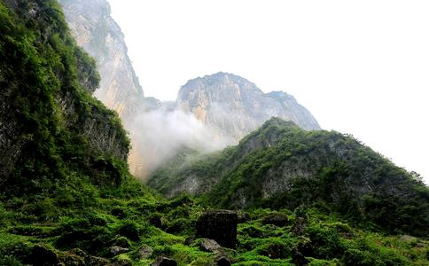

2010年4月18日，农历3月初五，周日。拔众生苦
每个周日，都会雷打不动组织放生共修，参加者多则数百，少则数十人，多是本地
其中一位是外省某居士，大姐，四十来岁，戴眼镜，态度谦冲，说话柔和，一副高级知识分子的样子。(经征求当事人意见，隐去其姓名及某些细节，以下以l居士代称)l居士一位至亲于2009年底查出头部右侧有两个肿瘤，经伽马刀和介入治疗，其中一个消失，但另一个生长迅速，2010年元旦期间，病情恶化，身体一侧出现偏瘫，医生说情况已很危急。
居士母亲几年前因肺癌去世，当时她已接触
2010年3月下旬，通过上网查询，l居士找到拔众生苦放生会网站和博客，看过我写的《
也许知道放生消业最快，病人的冤亲债主不答应了!
第一个周末，启程之前，她身体突然极度不适，全身乏力，头晕脑胀，几乎不能行动!放生之行就此取消。
第二个周末，临行前一晚做饭切菜时，竟然不小心用菜刀切伤了手指，血流如注，非常严重!据她说做了几十年饭，这种情况还是第一次发生!更莫名其妙巧的是单位也突然有急事，想带伤硬走都走不了!
第三个周末，她咬牙切齿，下了狠心，说什么也要来参加放生!本来买了周五晚上的卧铺车票，夜里11点左右发车。她还特意早点出门，但怪事再次出现，平时多如牛毛的出租车，那晚就是打不上!在路边站了一个多小时，最终赶到火车站时，离发车时间还有三分钟，工作人员已经不让进站!这次她铁了心，将车票改签成次日晚上，但因为是周末，不但没有卧铺，座号都没有!
周六晚上，这位大姐硬着头皮，“冒死”登上发往青岛的火车，车厢内果然人挨人，巨拥挤，几乎没有立足之地，她平时也算养尊处优，实在受不了，只好来到两节车厢之间的吸烟区，站了一夜，吸了一路二手烟，长途颠簸六个多小时终于赶到淄博!
放生之前出现种种违缘的事，我碰到过太多，但象这位大姐遇到这么多状况情况也算罕见!她看上去很文弱，平时身体也一般，这次能不畏艰难赶来，实属难能可贵!
另两位是济南黎姓姐妹，都非常
与三位外地居士见面后，无暇寒暄，直奔主题询问她们病人有关情况。果然不出所料，两名患者的绝症都与
姐的至亲，年轻时在肉联厂工作，曾亲手宰杀过无数鸡、鸭、猪等物命，后来调入其他单位，却以欠下无数命债!
黎氏姐妹的父亲是中学退休教师，七八十年代
“诸余罪中，杀业最重”!年轻时肆无忌惮，杀生害命，福报尽时，因果不爽，杀业来偿，罹患绝症，受尽苦楚，又怨得谁来?!
当今之世，各种癌症、恶疾泛滥，多少如母众生苦不堪言又无从
有种现象非常奇怪!虽说孝敬是为人儿女的本分，但女性好像普遍更心疼，更孝顺父母一些!几年来，很多外地师兄委托我们放生都是回向给罹患绝症的父母，其中绝大多数是女儿!从第一个找我的新疆乌鲁木齐的女师兄(其父患胆管癌)，到前几天打电话来的广东潮州小陈姑娘(其父患肝癌)再到这三位女同修，无一例外，都非常孝顺，令人感佩!
她们打电话来时，都非常焦急，对父母的病痛感同身受，有的更恨不能替父母代受痛苦甚至替父母去死!
她们也很能看破、放下!有的平时生活就很拮据，
每逢此时，总是莫名感动又无限惭愧!她们为父母尽孝而托我放生，无比信任，委以重托，而我本人却是个不折不扣的不孝之子!
我自幼不在父母身边长大，对他们缺乏最基本的
所以说“在家孝父母，胜于出门远
孝顺一事，理上虽然明白，但要做到发自内心，至情至性当真谈何容易!比如我自己，尽管现在天天都在“强迫”自己，同时也在“说教”别人，一定要孝顺、一定要孝顺。。。云云!但往往都是表面文章，流于形式，有时连表面文章都懒得做。。。
身为不孝之子，不由汗颜无地!
正因如此，我对孝顺的人，总是充满了敬畏!因为我可能永远都做不到她们那样!
非常荣幸，有缘接触到全国各地这么多孝顺女儿，虽然多数都未曾谋面，但我想她们定然都是这世上最最美丽的女子!因为仅仅一片至诚孝顺之心就已经将
当然也碰上过孝子，印象最深的是本地博山区的陈居士，去年其父罹患晚期鼻癌，非常痛苦，他找到并委托我为其父放生印书，同时发愿只要父亲能够康复，宁肯舍寿10年!虽然其父后来业因注定，还是很快往生，但他一片至诚
也正因如此，对于她们的“吩咐”，我都会绝对尽心尽责，不敢有一丝
这次放生也不例外。l姐要求将5万元一次放完，加上黎氏姐妹的1万，还有其他居士的
上午十点，放生开始。先在慈音
按照
这些事说来轻松，过秤、装袋等等过程却非常繁琐，很耗时间。眼看太阳偏西，手里却还剩两万多元钱放生款，不敢再耽搁，决定全部买鳖!“明光水产”是批发大户，专挑4斤以上的老鳖，买了近三百只，才把所有善款花完，将所有物命集中起来，在市场就地念诵仪轨、回向、装车，已是下午五点，即刻启程，奔向150公里外一片群山。
进入深山，专找密林悬崖，人迹罕至地带先将蝎子、土元放完，接着放大王蛇、山鸡、獾。。。l居士和黎氏姐妹以前也参加过放生，多是放些普通的鲤鱼、泥鳅等，如此面目狰狞的大王蛇、羽毛鲜艳的野鸡、凶猛嘶吼的獾却从未放过，看着物命们四散奔逃，雀跃而去，都非常兴奋。
放完山货，转出深山，已是夜里七点，天色全黑，位置已在章丘市境内，离济南不远。黎氏姐妹次日要上班，便将她们放在309国道边，搭顺风车回济南市内。临别之际，两姐妹颇有些依依不舍，再三嘱咐以后组织大放生一定通知她们，还要继续来参加。我们则转道向南，继续前进，驶向莱芜方向，放水生动物!
长途跋涉，一路颠簸，到达莱芜市某大型水库。为尽量确保物命安全，我们选择了一座高架桥下，人很难到达的位置，在桥上停好车，所有人员一起动手，女生打手电，小伙子们手提肩扛，将几十袋泥鳅、鳝鱼、鳖龟一一运到桥下几十米的岸边，趁黑全部放完，为避免留下痕迹，又将所有塑料袋、网兜收拾干净，这才上车走人，打道回府，回到慈音念佛堂，已是夜里十点!
佛堂值班大妈已做好晚饭(应该叫夜宵)，大家又累又饿，一个个原形毕露，甩开腮帮子一顿猛吃，那叫一个香!饭后闲聊，l姐对全天的放生，从砍价到过秤，从装袋充氧装车、到选择放生地点等等细节都很满意，对我们的专业高效精神和认真负责态度提出表扬，同时对所有师兄的辛苦付出表示感谢。我谦逊几句，虽然已十分疲惫，但心里总算一块石头落地!
这次放生，从上午十点开始到晚上十点结束，历经12小时，善款总计61478元，解救水陆空大小生命4万余条，5辆车、16人跨越淄博、章丘、莱芜三市，长途奔袭近300公里，而且不是走山路就是在深水边，一旦出现意外，身在外地又时处黑夜，后果不堪设想!所以一路上我的心一直悬着，生怕出什么状况，作为组织者，直接没法交代!幸喜诸佛菩萨护佑，所有人员和车辆全部安全返回，放生过程也非常顺利，人与物命，皆大
放生后次日，当天全程参与，干活竭尽全力的扈师兄打来电话，告诉我放生当晚他无意看到的一些情景。扈师兄，男，四十多岁，工人兄弟，勤劳朴实，事母至孝，修行非常精进!曾经借钱为身患乳癌，命在旦夕的老母放生，孝行感天，母癌竟然痊愈!(详见拙作“借钱放生，母癌得愈——奇迹震撼人心，人人都可实践___《虚空放生》系列12)
扈师兄有天眼通，经常能看到很多别人看不到的东西，以下是放生当晚他看到的情景:
放完蛇、獾之后，天已全黑，当我们车队驶出山口时，他无意间一瞥，突然看见车外很多人在向我们磕头，人数众多，难以计数，成片地跪拜，场面十分壮观!
这些众生身高参差不齐，多数在70公分左右，大概有四五岁孩子那么高，面部看不清楚，只能看到身形，但明显能感觉到，这些都是我们放生物命的神识在叩谢救命之恩!这一大片众生几米之外，我们座车的左前方，立着一位神灵，大约有3米高，很伟岸威严，正是这片山的山神，在带领所有被救生灵向我们致谢!
叩拜完毕后，所有生灵有序分列到车队两侧，目送我们出山。此时，
之后车驶离大山上了开往莱芜方向的公路，老扈当时座在皮卡车后排右侧，正好在我身后，行进十几分钟后，他又看到“韦陀菩萨”出现在车后大约一米外的夜空中，菩萨的脚离车顶大概一米高，腰如磨盘，受持金锏，身上放射出乳白色的亮光，一直跟着我们在空中飞行!这是老扈平生第一次看到“韦驮菩萨”的法像，非常清晰庄严，令他顿生敬仰，恨不能立刻顶礼跪拜!一路上菩萨时隐时现，一直跟到放生龟、鳖的水库才消失。。。。之后，我们5辆车，16人安全返回慈音念佛堂。。。
老扈说的话我完全相信!
一是相信他的人品。
二是相信自己的感觉。放生车队一驶出山口，座在车上，我忽然感觉前所未有的轻安喜乐!本来放完獾已经很疲倦，但此时却感觉身躯越来越飘。。。越来越轻。。。渐渐地整个身体好像都不存在了。。。慢慢溶化到虚空之中。。。。一路上这种感觉时断时续，直到回念佛堂吃饭才消失。。。。
三是类似情况的描述在别的地方也看过一些。比如台湾某放生组织放完海生物命后，有开天眼师兄清楚看到两位海神出现，将被救物命驱赶到大海深处。。。网上某篇帖子也曾记述放飞鸟儿后，空中有天神接引众鸟。。。还有位师兄进山放蛇时，随行一位“大仙”也看到很多在山里修行的各式各样的众生都赶来和物命一起听仪轨、做皈依。。。而之前在某水库放生时，扈师兄也曾提到看见一位湖神站在我们身边旁观。。。
所以我在多篇文章中都反复提到，放生一法包含甚深佛法密意，绝不是凡夫俗智以种种逻辑推理所能了知和揣测的!
放生时有两种情况引发的质疑和受到的攻击最多，也最能动摇放生佛子的
一、在运输过程中或放生现场，难免会有少部分物命不幸死亡。
二、物命被放后，也难免会有一部分被再次捕捉或因其他种种原因死亡。
从而引发一种论调:“放生等于放死，没有任何意义!”
我想这次大放生过程中，扈师兄看到的
一、
既然所有动物都是天、龙、罗刹、人与非人等等的眷属，我们希望眷属欢乐，共享天伦，他们也是一样!其实你放生的善念一动，他们就已经知道，并且在欢喜等待了!所以在放生现场，被放物命自会有其所属种族的天龙鬼神来接引保护，远离危险。。。“他们”的能耐都比我们大，根本不用我们瞎操心!(天龙鬼神多有诸佛菩萨为度化众生而示现)
比如水生动物会有龙族接引，野兽会有山神接引。。。看不到不等于不存在!再多质疑攻击，也改变不了这个事实!
二、“众生至爱者身命，而诸佛至爱者众生”!所有真正发大悲心，解救物命于倒悬的放生，必定会感得诸佛菩萨驾临现场，加持护佑!常放生的师兄都很熟悉
扈师兄在现场看到向我们跪拜的无数众生，其实都是那些被放物命的神识，或者说性灵。一切有情，无论大小，都有见闻觉知的性能，这种性能就是我们常说的
而一旦业力牵引，沦落三涂，往往是亿劫轮回，很难脱离，这期间其神识根本没有任何机会得闻佛法，更别说亲到佛前，蒙佛加持了!其实物命的这次报身只不过是其无数次
至于死在现场或放生后又因种种原因死亡的物命，则更不需要我们去操心挂念!因为一切有情都有生死，它们的身命虽尽，慧命却早已得到救拔!而且以佛力加持不可思议故，现场往生的物命反而最为幸运，其神识就此脱离畜生身，立即
综上所述，只要真正“以慈心故，行放生业”，其他一切疑虑都不必挂怀，尽管常放、多放、大放、特放!您解救的不只是过去的多生父母，更是未来的无量诸佛!
而那些林林总总、似是而非，攻击质疑放生的
详加辨析，则原形毕露，雕虫小技，不值一晒!
后记:本文发布之前，特意打电话回访这次大放生的委托人和功德主:外省l大姐和济南黎氏姊妹。
大放生后，l姐那位患脑癌的至亲于4月底再次做ct检查，结果显示，其头部右侧脑瘤不但未再生长，反而缩小了一部分。目前患者病情稳定，只是饭量小了很多。l姐问我是不是他心情不好所致?我的解释是:每个人的“禄用”，也就是你这辈子该吃多少饭，都是注定的!因为大量放生做功德，病人原有
其实少吃点有什么打紧?反而能够减轻各器官负担!能保住性命比什么都强!
受此影响，l姐至亲的全家都开始接触佛法，虽然还都不太信，但佛法难闻，今天毕竟已经闻到，既种下了种子，就总有一天会生根发芽!
而济南黎氏姊妹父亲的情况更加乐观，其右肺下叶的肿瘤也以缩小!并且一直没出现肺癌晚期患者常出现的呕吐、难受等症状。老爷子现在精神状态很好，出入行动正常，得空就骑自行车去济南“黑虎泉”打泉水喝，完全不像一个癌症晚期病人!
l姐和黎氏姊妹以此因缘，对放生和佛法的信心更加坚定，修行也更加精进!
常有同修对我们长年坚持放生表示不解，甚至颇不以为然。在他们眼中，放生是“有为法”，而“一切有为法，如梦幻泡影”，并不究竟，与人天福报有份，与解脱往生无关。。。
又有同修说，到处瞎跑什么?不如在家老老实实修法，成佛之后轻轻松松就能度化无量众生!乍一听很有道理，仔细分析，却多数都是未证言证，断章取义!
我只能以“星爷”一句话作答:“以你的智力，很难了解!”
首先，从弘法利生角度讲，目前时处末法，法弱魔强，芸芸众生，沉溺欲乐，贪念炽盛，只图眼前利益，少有人想到身后大事。而弘扬佛法，令众生入佛知见比历代任何时候都更显困难!
幸喜尚有放生一法，在末法时期还能大行其道!
所谓:“先以欲钩牵，后令入佛智”，放生一法，以其消业迅速，功德巨大故，对消灾祈福之事常能起到神秘莫测，立竿见影的效果。正因如此，通过大力弘扬
末法时期接引众生，还有比此更为善巧方便的方法吗?!
笔者放生数年，亲身经历的这种事例不胜枚举!而这也正是我们常年不辞劳苦，推广戒杀放生最重要的原因!
其次，从个人修行角度讲。佛陀曾有教言:“大悲心是一切
成佛之后，从显现上讲，唯一的“业务”就是度化众生，与其等到那时，不如从现在就开始!
再者，单就
若条件具备，既能持名念佛，又能慈悲放生，二者形成合力，临终之日，必能感得西方三圣现前接引，生前解救所有众生赶来推助，直登莲邦，花开见佛!
我佛慈悲，给末法众生留下如此简单易行，成效显著的善法，列位看官佛子还在等什么呢?
尽管很相信老扈，还是又问了他好几次:“那天真的看见山神带领无数众生给我们磕头吗?”言语间不禁很有几分沾沾自喜，洋洋自得!老扈总是很认真的说:“是真的，看的很清楚，绝不打妄语”!再问他:“山神和那些众生长什么样啊”?他还是很认真的说:“具体模样看不清，只看见身影和动作，但菩萨法像看的很清楚，非常殊胜”。
见我得意的有点找不着北，他又说:“我以前跟正觉寺“仁达法师”去放生，不但放生现场有无数动物神识向他磕头，所过之处，山神、河神、树神等等，还有各路“大仙”，都会向他恭敬叩拜!而你，只有被你放生的生灵会向你磕头，境界好像还差很多!”(仁达法师为本地“正觉寺”主持，曾经从淄博出发，三步一拜
不禁有几分没趣，瞪他两眼，心里说“我会一直放下去，走着瞧”!
而老扈依旧面带憨笑，茫然未觉，口中念念有词“阿弥陀佛，阿弥陀佛。。。。。”